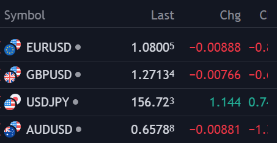
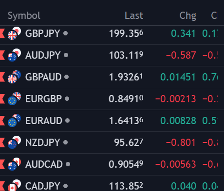
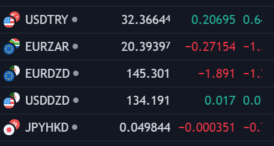
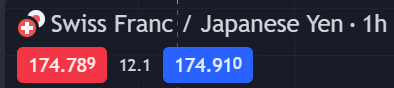

Currency Pairs
In forex trading, currencies are always traded in pairs. A currency pair consists of two currencies: the base currency and the quote currency . Understanding currency pairs is fundamental to forex trading, as they determine the value of one currency relative to another.
Major , Minor , and Exotic Pairs
Major Pairs:
Major pairs include the US Dollar (USD) and are the most frequently traded pairs in the forex market. They account for the majority of trading volume and include pairs such as EUR/USD, GBP/USD, USD/JPY, and USD/CHF.
Example: EUR/USD represents the Euro against the US Dollar. If the EUR/USD exchange rate is 1.0800, it means 1 Euro is equal to 1.0800 US Dollars.
Minor Pairs:
Minor pairs, also known as cross-currency pairs, do not include the US Dollar. They involve other major currencies such as the Euro, British Pound, or Japanese Yen. Examples include EUR/GBP, EUR/AUD, and GBP/JPY.
Example: GBP/JPY represents the British Pound against the Japanese Yen. If the GBP/JPY exchange rate is 199.35, it means 1 British Pound is equal to 199.35 Japanese Yen.
Exotic Pairs:
Exotic pairs consist of one major currency and one currency from an emerging or smaller economy. Examples include USD/TRY (US Dollar/Turkish Lira), USD/ZAR (US Dollar/South African Rand), and EUR/TRY (Euro/Turkish Lira).
Example: USD/TRY represents the US Dollar against the Turkish Lira. If the USD/TRY exchange rate is 32.3664, it means 1 US Dollar is equal to 32.3664 Turkish Lira.
Understanding Exchange Rates:
An exchange rate is the price of one currency in terms of another currency. For instance, if the EUR/USD pair is quoted at 1.1200, it means that 1 Euro is equivalent to 1.1200 US Dollars. Exchange rates fluctuate constantly due to various factors, including economic data, geopolitical events, and market sentiment.
Bid and Ask Prices:
In forex trading, there are always two prices for each currency pair: the bid price and the ask price.
- Bid Price (in red button) : The price at which you can sell the base currency.
- Ask Price (in blue button): The price at which you can buy the base currency.
The difference between the bid and ask prices is called the spread (in gray between the two buttons), which is essentially the broker's fee for facilitating the trade.
Example of a Trade:
Let's say you want to trade the EUR/USD pair:
Current Quote: EUR/USD = 1.0800/1.0802
- Bid Price: 1.0800 (You can sell 1 Euro for 1.0800 USD)
- Ask Price: 1.0802 (You can buy 1 Euro for 1.0802 USD)
If you believe the Euro will strengthen against the Dollar, you would buy at the ask price of 1.0802. Later, if the price rises to 1.0850/1.0852, you could sell at the new bid price of 1.0850 making a profit from the difference.
Factors Influencing Currency Pairs:
Several factors can influence the movement of currency pairs, including:
- Economic Indicators: Data such as GDP growth, employment rates, and inflation can significantly impact currency values.
- Central Bank Policies: Interest rate decisions and monetary policies of central banks play a crucial role in determining currency prices.
- Political Stability: Political events, elections, and geopolitical tensions can cause currency values to fluctuate.
- Market Sentiment: The overall mood and psychology of the market participants can influence currency prices, often driven by news and speculative activities.
Conclusion
Understanding currency pairs is crucial for forex trading success. By knowing how currency pairs work, the types of pairs available, and the factors that influence their prices, traders can develop effective strategies and make informed trading decisions. .